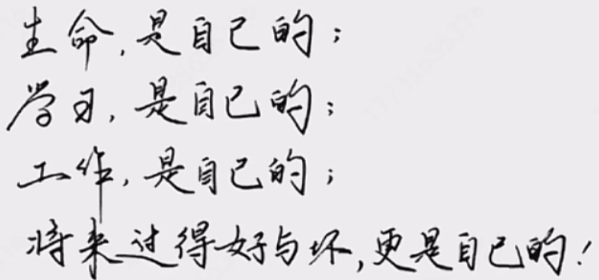

Journal of King Saud University - Computer and Information Sciences

论文成果
以第一作者身份录用论文 2 篇。
教育经历
2024.09 - 2027.06（预计）
2019.09 - 2023.07
太原工业学院 · 计算机工程系
网络工程专业，本科 GPA 3.06/4
优秀共青团员（连续2年）
研究方向
01
颜色信息保留
针对现有 CNN 与 GAN 类融合方法易出现细节丢失、边缘模糊，且较少系统保留可见光颜色信息的问题，研究面向颜色保真的红外与可见光图像融合方法。
02
视觉感知与高级视觉任务
围绕高色彩保真融合结果更符合人类视觉感知这一特点，研究提升融合图像视觉质量与语义表达能力的方法，使融合结果更有利于目标识别、场景理解与视觉注意力等高级视觉任务。
03
边境安防下游检测
面向边境安防中的非法入境目标检测与识别需求，研究多通道可见光和单通道红外数据的联合建模与细节增强融合，为后续检测和识别提供颜色更生动、细节更丰富的融合结果。
科研项目
国家自然科学基金
地区科学基金项目
地区科学基金项目
面向边境安防的超大场景自动监测技术研究
项目参与者，围绕边境安防场景中的多模态感知、图像融合和自动监测技术开展研究。
云南省科技厅
科技计划项目
科技计划项目
针对超大场景下的多模态图像融合与目标检测研究
项目参与者，研究超大场景下多模态图像融合与目标检测相关方法。
科研技能
- 研究方法熟悉红外与可见光图像融合、多模态特征交互、语义引导融合、注意力机制与门控网络、不确定性建模等深度学习方法，了解目标检测与识别等下游任务。
- 研究工具熟练使用 Python 与 PyTorch 开展模型搭建与实验，熟悉 Linux 环境与基础运维，掌握常用图像处理与实验分析流程。
- 学术写作英语水平 CET-6 499，具备中英文学术论文写作与修改能力，熟悉 SCI 期刊投稿与返修流程。
实践与荣誉
学生工作
- 班级团支部组织委员，2025.09 - 至今
- 班级文体委员，2024.09 - 2025.09
- 太原工业学院 PC 义修团负责人，2021.09 - 2022.06
工作经历
- 北京昆仑万维科技股份有限公司，Linux 运维岗，2023.07 - 2024.08
竞赛与专利
- 第十届华为 ICT 大赛实践赛云南赛区一等奖
- 第八届传智杯全国 IT 技能大赛云南赛区一等奖
- 2026 云师大第三届“图灵杯”程序设计大赛一等奖
- 发明专利公开 1 项
最新动态
- UMAFusion 录用。
- MISSFusion 录用。
- 个人学术主页上线。
